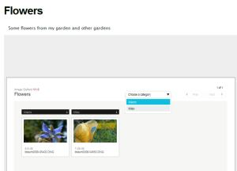

Image Gallery
http://tonyyoo.com/gallery/ImageGallery.zip
Features
- Intelligentes Vorabladen von Bildern
- Navigation mit Hilfe von Vorschaubildern
- Diashow
- Unterstützung für Bildbeschriftungen
- Kein "Download Originals"-Link
- Keine EXIF-Anzeige
- Keine Textauszeichnung und keine Umlaute in Bildbeschreibungen
- Flash-basiert
- Unterstützung für mehrere Storyboards pro Seite